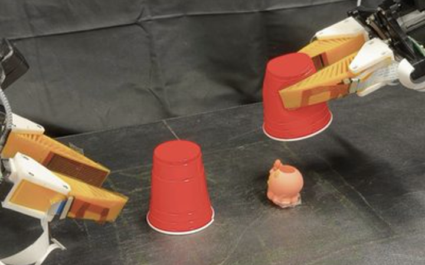
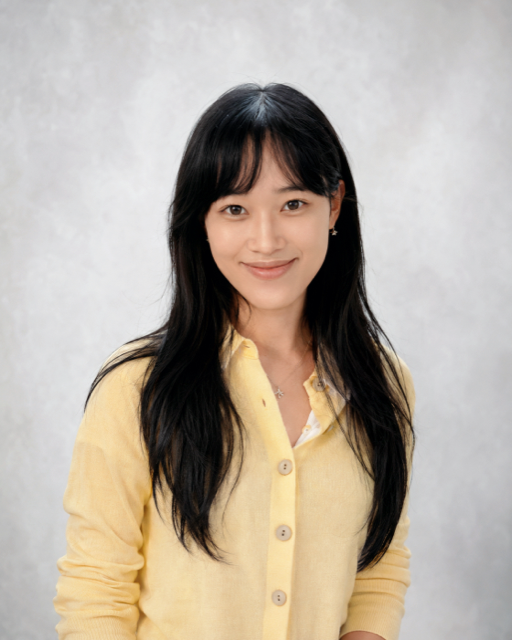
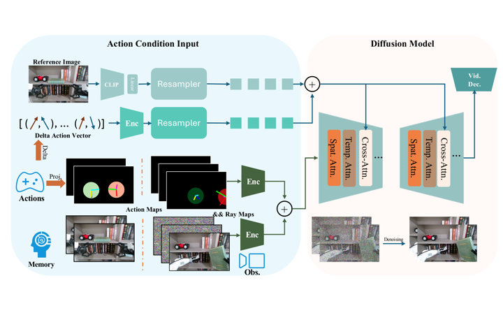
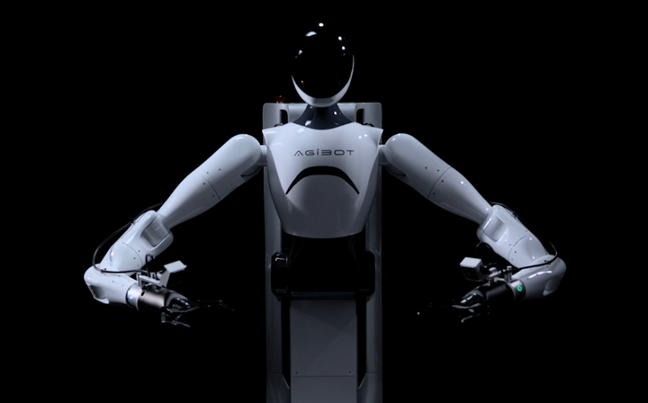
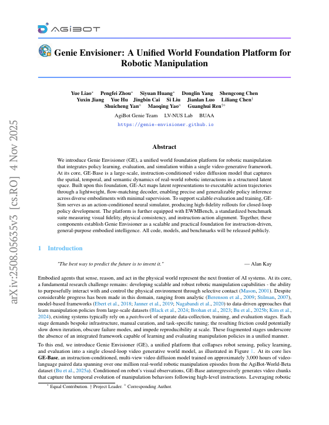
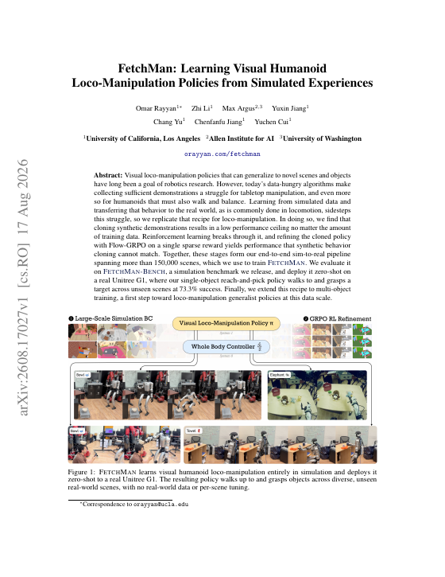
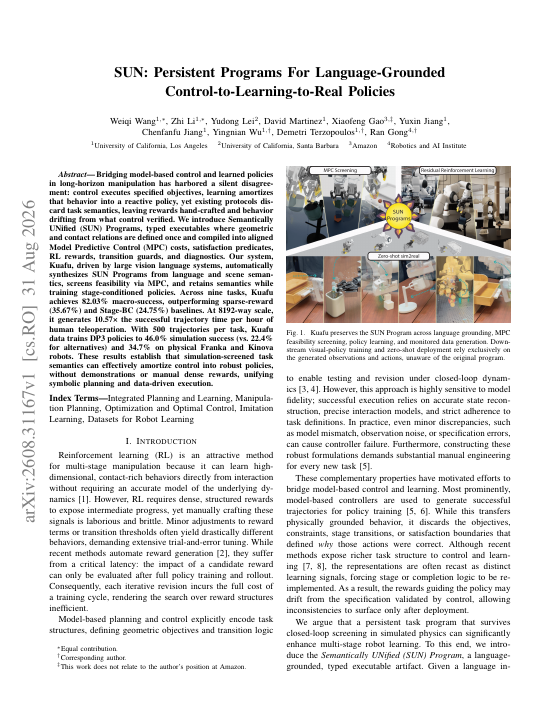
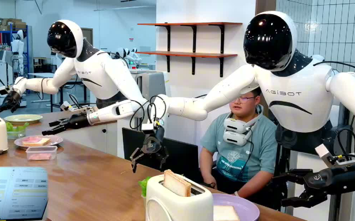

I am a Ph.D. student in Computer Science at the University of California, Los Angeles, advised by Prof. Chenfanfu Jiang in the AI & Visual Computing Laboratory. My research focuses on world models, vision-language-action models, and scalable robot-learning systems.
Before UCLA, I was a machine learning researcher at AgiBot, where I worked on EnerVerse-AC, AgiBot World Colosseo, Genie Envisioner, and large-scale embodied AI training systems. I also collaborate with Nirvana Robotics on memory-augmented world models and agentic policy generation.
Email | Google Scholar | CV
I am always open to collaborations on robot world models, vision-language-action systems, and embodied AI. Please drop me an email.
Research Interest
I am interested in building robot intelligence that can imagine, evaluate, and execute actions in complex environments. A few questions that drive my current work are:
- World Models: How can robots use memory and predictive video models to reason over long-horizon manipulation?
- Vision-Language-Action Models: How can multimodal foundation models generate actions that transfer across tasks and embodiments?
- Scalable Robot Data: How can simulation, human videos, and generative models reduce the cost of learning robust manipulation skills?
Publications
* indicates equal contribution.

EnerVerse-AC: Envisioning Embodied Environments with Action Condition
Yuxin Jiang*, Shengcong Chen*, Siyuan Huang*, Liliang Chen, Pengfei Zhou, Yue Liao, Xindong He, Chiming Liu, Hongsheng Li, Maoqing Yao, Guanghui Ren
NeurIPS 2025 Workshop on Embodied World Models for Decision Making Selected Oral Outstanding Paper
Official baseline model for the world-model track of the AgiBot World Challenge at ICRA 2026.

AgiBot World Colosseo: A Large-Scale Manipulation Platform for Scalable and Intelligent Embodied Systems
Qingwen Bu, Guanghui Ren, Chiming Liu, Modi Shi, ..., Yuxin Jiang, ..., Hongyang Li, Yu Qiao, Maoqing Yao (AgiBot World Team)
IEEE Transactions on Robotics, 2026 Selected
IROS 2025 Best Paper Finalist

Genie Envisioner: A Unified World Foundation Platform for Robotic Manipulation
Yue Liao, Pengfei Zhou, Siyuan Huang, Donglin Yang, Shengcong Chen, Yuxin Jiang, Yue Hu, Si Liu, Jianlan Luo, Liliang Chen, Shuicheng Yan, Maoqing Yao, Guanghui Ren
International Conference on Learning Representations (ICLR), 2026


SUN: Persistent Programs for Language-Grounded Control-to-Learning-to-Real Policies
Weiqi Wang, Zhi Li, Yudong Lei, David Martinez, Xiaofeng Gao, Yuxin Jiang, Chenfanfu Jiang, Yingnian Wu, Demetri Terzopoulos, Ran Gong
arXiv preprint, 2026

Genie Centurion: Accelerating Scalable Real-World Robot Training with Human Rewind-and-Refine Guidance
Wenhao Wang, Jianheng Song, Chiming Liu, Jiayao Ma, Siyuan Feng, Jingyuan Wang, Yuxin Jiang, Kylin Chen, Sikang Zhan, Yi Wang, Tong Meng, Modi Shi, Xindong He, Guanghui Ren, Yang Yang, Maoqing Yao
arXiv preprint, 2025
Experience
- University of California, Los Angeles, Ph.D. Student in Computer Science, 2026.09-present.
- Nirvana Robotics, Research Collaborator, 2026.01-present.
- UCLA AI & Visual Computing Laboratory, Visiting Researcher, 2025.09-2026.07.
- AgiBot AI Research Institute, Machine Learning Researcher, 2024.06-2025.08.
- Ant Group AI Digital Human Institute, ML Engineer and Technical PM Intern, 2024.01-2024.05.
- Imperial College London, B.Sc. in Mathematics with Statistics for Finance, 2020.10-2023.08.
Awards & Service
- Outstanding Paper Award and Oral Presentation, NeurIPS 2025 Workshop on Embodied World Models for Decision Making.
- Best Paper Award Finalist, IROS 2025.
- Reviewer, Conference on Robot Learning (CoRL), 2026.
- Member, IEEE.